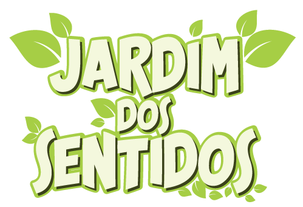

Projeto de Educação Ambiental realizado desde 2002, com o objetivo de despertar a consciência acerca da importância da preservação do Meio Ambiente como manutenção da sobrevivência dos seres humanos, fornecendo ferramentas pedagógicas inovadoras para os professores e alunos tratarem dos temas de forma lúdica e divertida.
É uma ação de cidadania praticada por voluntários de todas as idades e classes sociais, que realizam a catação de lixo em ruas, praças, parques e praias, entre outros locais. Durante a atividade uma parte da equipe realiza a distribuição de materiais educativos sobre os impactos causados ao meio ambiente pelos diferentes resíduos descartados.
O projeto é voltado para alunos dos Fundamentais I e II, com a parceira da PMSP e aprovado pelo CMDCA - Conselho Mun. Direitos da Criança e do Adolescente da Pref de SP, patrocinado pelo FUMCAD – Fundo Mun. dos Direitos da Criança e do Adolescente

Com este projeto, podemos dar às pessoas (em especial às crianças) uma nova chance de redescobrir a importância das plantas, das ervas e das árvores para a sua sobrevivência, atribuindo a estes recursos o seu merecido valor.